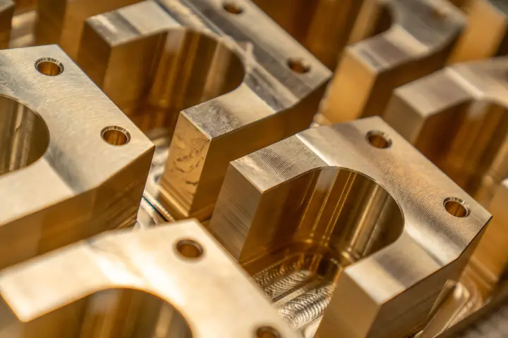

マシニング加工
ブロック形状の部品、ポケット・穴あけ・タップ。治具やブラケットの多くはここで仕上げます。
ブロック形状の部品、ポケット・穴あけ・タップ。治具やブラケットの多くはここで仕上げます。

シャフト・カラー・ブッシュなどの丸物。数個なら汎用旋盤、数十個からはNC旋盤で削ります。
焼入れ後の鋼や、刃物が入らない細い溝・角。型の部品などに使います。
写真はすべて素材写真（イメージ）で、この会社の設備ではありません。
下の表は見本用の架空の設定です。実際の制作では、設備の仕様から書き起こします。
架空のサンプル
| 材質 | よく削るもの | 大きさの目安 | 公差の目安 |
|---|---|---|---|
| アルミ（A5052・A7075） | 治具・カバー・ブラケット | 400×300×150 mm まで | ±0.02 mm |
| ステンレス（SUS303・SUS304） | シャフト・継手・食品機械の部品 | φ60×300 mm まで | ±0.02 mm |
| 真鍮（C3604） | 端子・ノズル・装飾部品 | φ30 mm まで | ±0.02 mm |
| 樹脂（POM・MCナイロン） | ガイド・カラー | 要相談 | 要相談 |
チタン・インコネルなどの難削材は、お受けできないことがあります。まずは図面をお送りください。
写真のうち「マシニング加工」「旋盤加工」は別々の素材写真で、写っている機械の種類は見出しと合わせています（どの写真もこの会社の設備ではありません）。
自社で削るもの、協力工場にまとめて頼むもの、お受けしないものを分けています。
窓口はこちらで一本にし、納期もまとめてお伝えします。
合うところをご存じなら、ご紹介します。
お問い合わせフォームから PDF・DXF・STEP を添付してください。手描きの寸法入りスケッチでも見積りできます。
2営業日以内にメールでお返しします。形状の確認が必要なときは、お電話で数分だけ伺います。
標準的な材料なら在庫か翌日入荷です。試作品は1個目を削った時点で寸法をお知らせします。
主要寸法の測定結果を紙1枚にまとめて同梱します。千草ヶ丘市内と近くの町には、社用車で届けることもあります。
下の金額は見本用の架空の設定です。公開されている町工場の料金例を参考にしていますが、一部は見本の価格です。実際の制作では、その会社の過去の見積りから、よくある仕事を3〜5件選んで載せます。
架空のサンプル
金額が大きく変わるのは、材質、いちばん厳しい公差、数量、表面処理の有無です。図面に「ここは緩くてよい」という箇所があれば、書き添えていただくと安くなることがあります。
はい。寸法と材質、数量が書いてあれば見積りできます。写真を一緒に送っていただくと、確認の電話が短くなります。
はい、1個からお受けしています。ただし、段取りの費用は1個でも10個でもあまり変わらないので、1個あたりの金額は高くなります。
秘密保持契約（NDA）を先に結んでから図面をいただくこともできます。ひな形をお持ちでしたら、そちらを使います。
はい。近くの協力工場に出して、仕上がったものをまとめて納めます。そのぶん納期に数日を足してお伝えします。
形と材料によります。材料が在庫にあり、機械が空いていれば最短3営業日です（見本の設定）。お問い合わせの本文に、ご希望の日付を書き添えてください。
はい。図面のやり取りはメールで、納品は宅配便です。市内なら社用車で届けることもありますが、遠方でも測定結果の紙は同じように同梱します。
架空のサンプル

装置メーカー・試作
（ここに部品の写真と、材質・数量・納期・工夫した点を1件ずつ入れます。取引先の名前は出さず、守秘義務の範囲で書きます。）
食品機械・継続品
（同上。例：毎月決まった数の継続品で、材料の手配までまとめて任せてもらっている、など。）